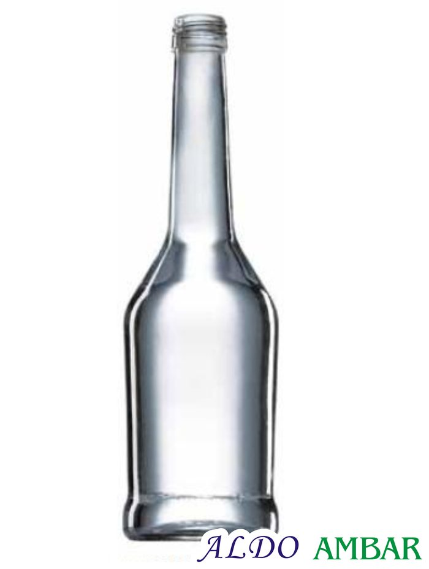
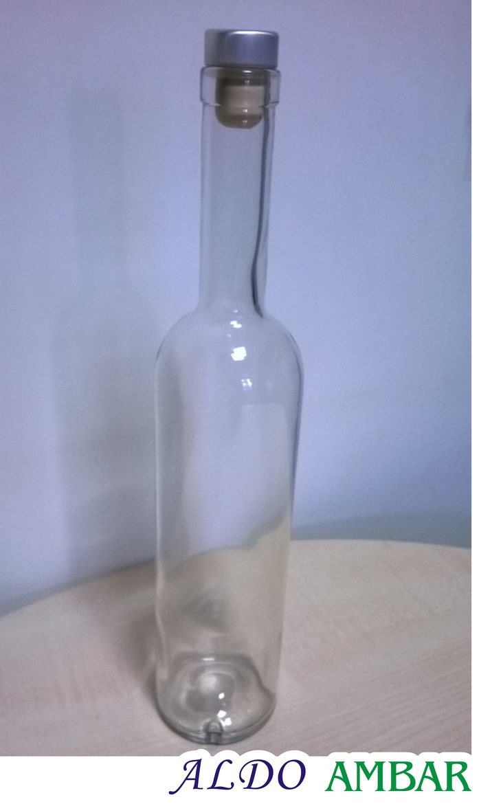
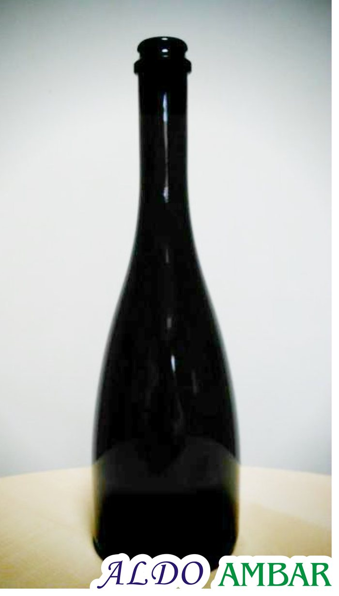
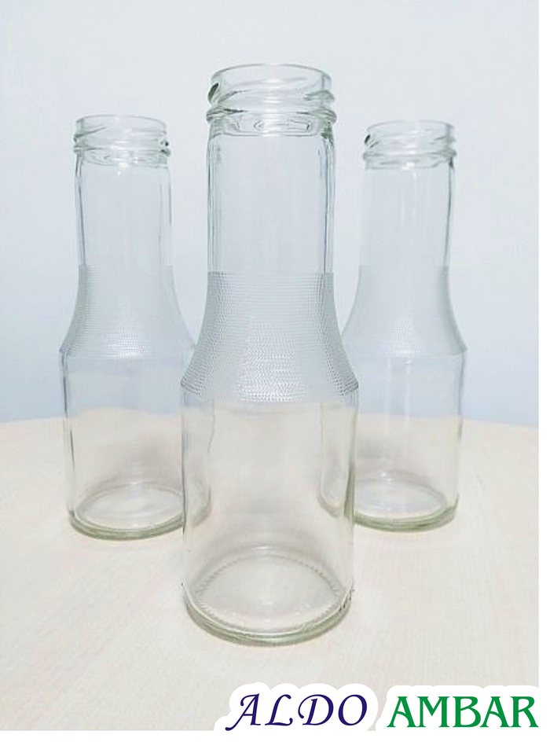

NAPOLEON
0,5 l · zakrętka 28 mm
Na alkohole smakowe, lokalne i nalewki. Szkło bezbarwne, wys. 25,8 cm, 370 g.
Oferta
Oferujemy dużą gamę surowców i dodatków oraz wiele materiałów pomocniczych potrzebnych do produkcji. Współpracujemy z renomowanymi producentami i dostawcami z kraju i zagranicy. We własnym zakresie produkujemy koncentrat magnezowy i wapniowy do mineralizacji wody.
Aromaty naturalne, identyczne z naturalnymi i syntetyczne. Dobór rodzaju aromatu zależy od środka spożywczego, a ich stosowanie regulują przepisy wydawane przez Ministra Zdrowia. Dystrybuujemy aromaty firmy JAR.
Emulsje to mieszaniny nadające napojom aromat, smak i barwę. Koncentraty owocowe to zagęszczone soki z owoców krajowych i egzotycznych – do napojów, lodów i wyrobów cukierniczych. Jesteśmy dystrybutorem firmy CAROTEX.
Przepisy dopuszczają w produkcji żywności ok. 330 substancji dodatkowych i ok. 90 aromatów naturalnych i substancji aromatyzujących. Najważniejsze jest nie to, jak substancję pozyskano, ale czy zapewnia konsumentowi bezpieczeństwo zdrowotne.
Produkty można zamówić w Biurze Handlowym telefonicznie (12 285 18 73, 12 285 15 06), e-mailem (biuro@ambar.pl) lub w sklepie internetowym ALDO.
Napój profilaktyczny AMBAR – w butelkach szklanych 0,33 l oraz PET 0,5 l i 1,5 l, w 17 wersjach dla różnych grup odbiorców.
napojeprofilaktyczne.plWody mineralne i wody lecznicze. Opracowaliśmy też technologię wody stołowej wzbogaconej w magnez (100 mg/l) i wapń (200 mg/l).
wodadlazdrowia.plButelki na syropy, soki, wina, nalewki i inne alkohole. Sprzedaż hurtowa od jednej palety oraz detaliczna. Przy ilościach całopaletowych możliwe zamówienie innych modeli według preferencji klienta.

0,5 l · zakrętka 28 mm
Na alkohole smakowe, lokalne i nalewki. Szkło bezbarwne, wys. 25,8 cm, 370 g.

0,5 l · korek
Elegancki kształt na nalewki i alkohole smakowe. Wys. 33,7 cm, 500 g.

0,7 l · zakrętka
Na wina, likiery i nalewki. Wys. 24 cm, 540 g.

0,75 l · szkło czarna oliwka
Na alkohole ekskluzywne, wina i wina musujące. Wys. 30 cm, 740 g.

0,5 l · szkło brązowe
Na wyroby medyczne i oleje (np. lniany, z pestek dyni). Gwint 28 mm.

0,33 l · zakrętka 43 mm
Na soki, przeciery i ketchupy. Wys. 17 cm, 160 g.
W ofercie także: BORDOLESE FUTURA 0,5 l, LINA 0,5 l, FENICE 0,2 l, LIEH 0,5 l, SOCZEK 0,33 l, JUNIOR 0,33 l, PIERSIÓWKA 0,1 l i 0,2 l, BORDEAUX 0,75 l (bezbarwna i oliwkowa).
Jesteśmy przedstawicielem fińskiej firmy Finn-Korkki (kapsle z kółkiem) i dystrybutorem kapsli koronowych CAN-PACK. Kleje AKWAWIT i HELIOS dla przemysłu spożywczego. Projektujemy i drukujemy etykiety – mamy katalog projektów do adaptacji.
Opracowujemy technologie, receptury i normy zakładowe przydatne do produkcji napojów oraz pomagamy wdrożyć zasady GHP, GMP i HACCP.
technologia produkcji napojów, technologia produkcji wody magnezowej
napojów bezalkoholowych, wody mineralizowanej
na napoje gazowane, napoje niegazowane, wodę mineralizowaną
wdrażanie zasad Dobrej Praktyki Higienicznej, Dobrej Praktyki Produkcyjnej i HACCP, szkolenia
dobór i montaż maszyn i urządzeń
Ceny i specyfikacje: [do uzupełnienia]. Napisz, czego szukasz – odpowiemy z ofertą.